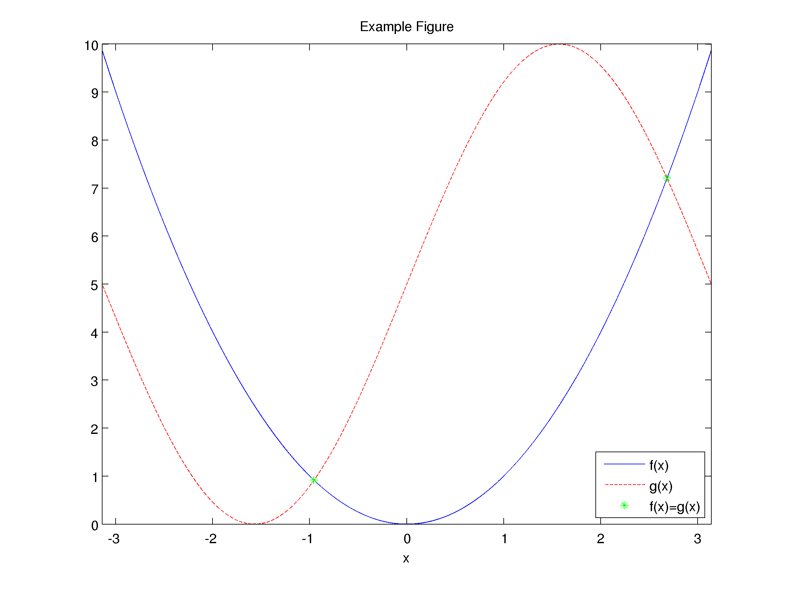
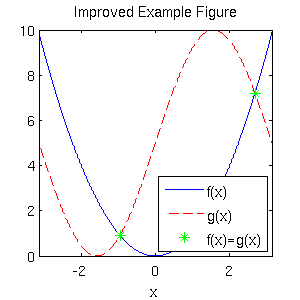
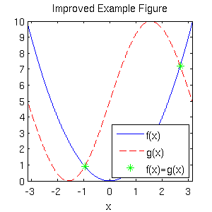
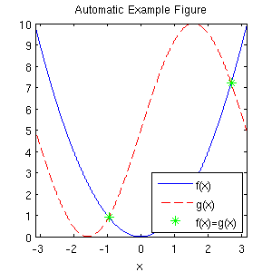

Creating high-quality graphics in MATLAB for papers and presentations
- Tamara G. Kolda, Sandia National Laboratories (*)
- David F. Gleich, Purdue University
- April 2013
(*) Sandia National Laboratories is a multi-program laboratory managed and operated by Sandia Corporation, a wholly owned subsidiary of Lockheed Martin Corporation, for the U.S. Department of Energy's National Nuclear Security Administration under contract DE-AC04-94AL85000.
Contents
A simple figure that is hard to view
Here we show a normal image from MATLAB. This example has been adapted from YAGTOM (http://code.google.com/p/yagtom/), an excellent MATLAB resource.
f = @(x) x.^2; g = @(x) 5*sin(x)+5; dmn = -pi:0.001:pi; xeq = dmn(abs(f(dmn) - g(dmn)) < 0.002); figure(1); plot(dmn,f(dmn),'b-',dmn,g(dmn),'r--',xeq,f(xeq),'g*'); xlim([-pi pi]); legend('f(x)', 'g(x)', 'f(x)=g(x)', 'Location', 'SouthEast'); xlabel('x'); title('Example Figure'); print('example', '-dpng', '-r300'); %<-Save as PNG with 300 DPI

The default MATLAB figure does not render well for papers or slides. For instance, suppose we resize the image to 300 pixels high and display in HTML using the following HTML code:
<img src="example.png" height=300>
The image renders as shown below and is not easy to read.

Step 1: Choose parameters (line width, font size, picture size, etc.)
There are a few parameters that can be used to modify a figure so that it prints or displays well. In the table below, we give some suggested values for papers and presentations. Typically, some trial and error is needed to find values that work well for a particular scenario. It's a good idea to test the final version in its final place (e.g., as a figure in a LaTeX report or an image in a PowerPoint presentation) to make sure the sizes are acceptable.
| Default | Paper | Presentation | |
|---|---|---|---|
| Width | 5.6 | varies | varies |
| Height | 4.2 | varies | varies |
| AxesLineWidth | 0.5 | 0.75 | 1 |
| FontSize | 10 | 8 | 14 |
| LineWidth | 0.5 | 1.5 | 2 |
| MarkerSize | 6 | 8 | 12 |
% Defaults for this blog post width = 3; % Width in inches height = 3; % Height in inches alw = 0.75; % AxesLineWidth fsz = 11; % Fontsize lw = 1.5; % LineWidth msz = 8; % MarkerSize
Step 2: Creating a figure with manually modified properties
Create a new figure. Set its size via the 'Position' setting. These commands assume 100 dpi for the sake of on-screen viewing, but this does not impact the resolution of the saved image. For the current axes, set the default fontsize and axes linewidth (different from the plot linewidth). For plotting the results, manually specify the line width and marker sizes as part of the plot command itself. The font size for the legend, axes lables, and title are inherited from the settings for the current axes.
figure(2); pos = get(gcf, 'Position'); set(gcf, 'Position', [pos(1) pos(2) width*100, height*100]); %<- Set size set(gca, 'FontSize', fsz, 'LineWidth', alw); %<- Set properties plot(dmn,f(dmn),'b-',dmn, g(dmn),'r--',xeq,f(xeq),'g*','LineWidth',lw,'MarkerSize',msz); %<- Specify plot properites xlim([-pi pi]); legend('f(x)', 'g(x)', 'f(x)=g(x)', 'Location', 'SouthEast'); xlabel('x'); title('Improved Example Figure');
Step 3: Save the figure to a file and view the final results
Now that you've created this fantastic figure, you want to save it to file. There are two caveats:
- Depending on the size of figure, MATLAB may or may not choose tick marks to your liking. These can change again when the figure is saved. Therefore, it's best to manually specify the tick marks so that they are correctly preserved in both display and saving.
- The size needs to be preserved in the saved (i.e., printed) version. To do this, we have so specify the correct position on the paper.
% Set Tick Marks set(gca,'XTick',-3:3); set(gca,'YTick',0:10); % Here we preserve the size of the image when we save it. set(gcf,'InvertHardcopy','on'); set(gcf,'PaperUnits', 'inches'); papersize = get(gcf, 'PaperSize'); left = (papersize(1)- width)/2; bottom = (papersize(2)- height)/2; myfiguresize = [left, bottom, width, height]; set(gcf,'PaperPosition', myfiguresize); % Save the file as PNG print('improvedExample','-dpng','-r300');
EPS versus PNG
An interesting feature of MATLAB is that the rendering in EPS is not the same as in PNG. To illustrate the point, we save the image as EPS, convert it to PNG, and then show it here. The EPS version is cropped differently. Additionally, the dashed line looks more like the original image in the EPS version than in the PNG version.
print('improvedExample','-depsc2','-r300'); if ispc % Use Windows ghostscript call system('gswin64c -o -q -sDEVICE=png256 -dEPSCrop -r300 -oimprovedExample_eps.png improvedExample.eps'); else % Use Unix/OSX ghostscript call system('gs -o -q -sDEVICE=png256 -dEPSCrop -r300 -oimprovedExample_eps.png improvedExample.eps'); end
GPL Ghostscript 9.05 (2012-02-08) Copyright (C) 2010 Artifex Software, Inc. All rights reserved. This software comes with NO WARRANTY: see the file PUBLIC for details. Loading NimbusSanL-Regu font from /usr/share/fonts/type1/gsfonts/n019003l.pfb... 3646352 2215482 7518328 6166171 3 done.
Original |
Improved |
Improved EPS->PNG |
Automating the example
There is a way to make this process easier, especially if you are generating many figures that will have the same settings. It involves changing Matlab's default settings for the current session. Note that these changes apply only a per-session basis; if you restart Matlab, these changes are forgotten! Recently, the Undocumented Matlab Blog had a great post about these hidden defaults http://undocumentedmatlab.com/blog/getting-default-hg-property-values/. There are many other properties that can potentially be changed as well.
% The new defaults will not take effect if there are any open figures. To % use them, we close all figures, and then repeat the first example. close all; % The properties we've been using in the figures set(0,'defaultLineLineWidth',lw); % set the default line width to lw set(0,'defaultLineMarkerSize',msz); % set the default line marker size to msz set(0,'defaultLineLineWidth',lw); % set the default line width to lw set(0,'defaultLineMarkerSize',msz); % set the default line marker size to msz % Set the default Size for display defpos = get(0,'defaultFigurePosition'); set(0,'defaultFigurePosition', [defpos(1) defpos(2) width*100, height*100]); % Set the defaults for saving/printing to a file set(0,'defaultFigureInvertHardcopy','on'); % This is the default anyway set(0,'defaultFigurePaperUnits','inches'); % This is the default anyway defsize = get(gcf, 'PaperSize'); left = (defsize(1)- width)/2; bottom = (defsize(2)- height)/2; defsize = [left, bottom, width, height]; set(0, 'defaultFigurePaperPosition', defsize); % Now we repeat the first example but do not need to include anything % special beyond manually specifying the tick marks. figure(1); clf; plot(dmn,f(dmn),'b-',dmn,g(dmn),'r--',xeq,f(xeq),'g*'); xlim([-pi pi]); legend('f(x)', 'g(x)', 'f(x)=g(x)', 'Location', 'SouthEast'); xlabel('x'); title('Automatic Example Figure'); set(gca,'XTick',-3:3); %<- Still need to manually specific tick marks set(gca,'YTick',0:10); %<- Still need to manually specific tick marks
And here is the saved version rendered via the HTML command
<img src="autoExample.png" height=300>
print('autoExample', '-dpng', '-r300');